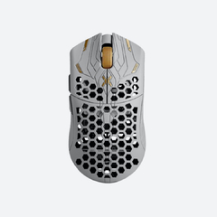
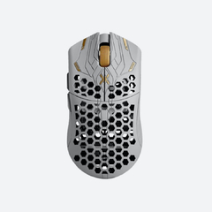

R$2.199,90
Comemorando 10 anos de inovação revolucionária, o ULX Prophecy da Finalmouse redefine os padrões de desempenho nos eSports. Com peso entre apenas 33 e 38 gramas, este mouse foi projetado para transformar sua experiência de jogo.
Equipado com a tecnologia sem fio de 8000Hz, ele oferece latência de clique de apenas 344 microssegundos e latência de movimento de 444 microssegundos, estabelecendo um novo patamar em velocidade e precisão.
Cada unidade é cuidadosamente produzida, com cores exclusivas e acabamento UV matte de competição, que proporciona aderência superior e alta durabilidade. As laterais exibem uma arte refinada, criada por um mestre da caligrafia persa – um toque artístico que destaca sofisticação e atenção aos detalhes.
Disponível em três tamanhos – Small, Medium e Classic – o ULX Prophecy se adapta a diferentes formatos de mão, oferecendo conforto personalizado. Seu corpo é construído com compósito de fibra de carbono de última geração, garantindo leveza extrema com estabilidade estrutural. Além disso, conta com conectividade sem fio 2.4GHz e carregamento via USB-C, proporcionando máxima flexibilidade e praticidade.
O mouse gamer sem fio full-size mais leve do mundo: de 33 a 38 gramas
Tecnologia 8000Hz com latência ultrabaixa de clique e rastreio
Revestimento exclusivo UV matte para melhor aderência e resistência
Design artístico com detalhes caligráficos únicos
Três tamanhos disponíveis para encaixe ideal: Small, Medium e Large
Dimensões: 126 mm (C) x 59 mm (L) x 38.4 mm (A)
Shape: Simétrico - Destro
Pegadas: Fingertip - Claw - Palm
Peso: 38g
Botões 5 (incluindo click central)
Switches Principais: Huano Blue Shell Pink Dot (binados)
Scroll: TTC Gold - Tactilidade Média - Passos bem definidos
Sensor: Finalsensor (3395)
Tipo de Sensor: Óptico
DPI: 400 / 800 / 1600 / 3200 / 6400 (Ou customizada até 12800)
IPS: 650 IPS
Aceleração: 50G
Frequência: 500 / 1000 / 2000 / 4000 / 8000 Hz
Iluminação: Somente indicador de bateria
Cabo: 1.80 m, paracord
Conexão: Cabo (USB-C) e Wireless (2.4ghz)
Duração da bateria: até 70 horas (1000 Hz)
Software: Sim